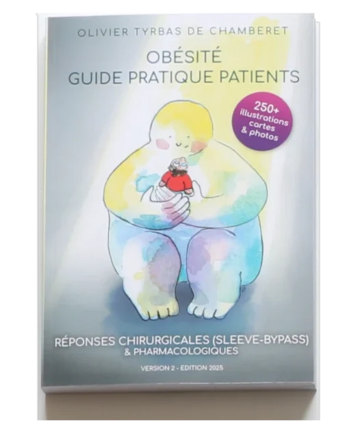
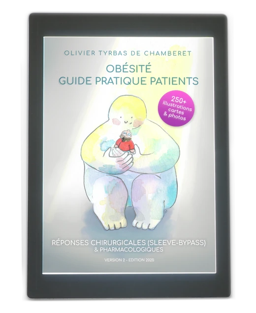
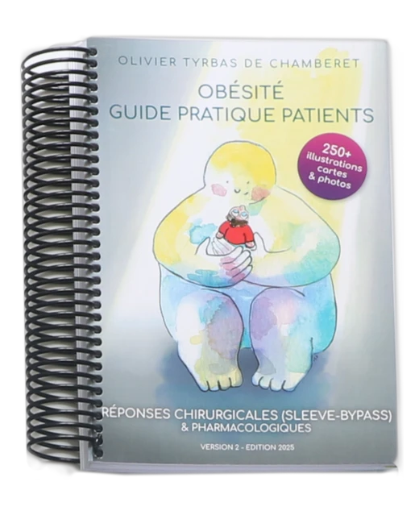
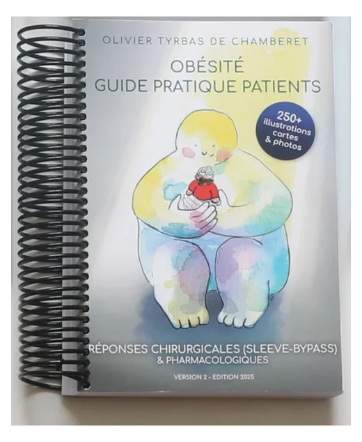
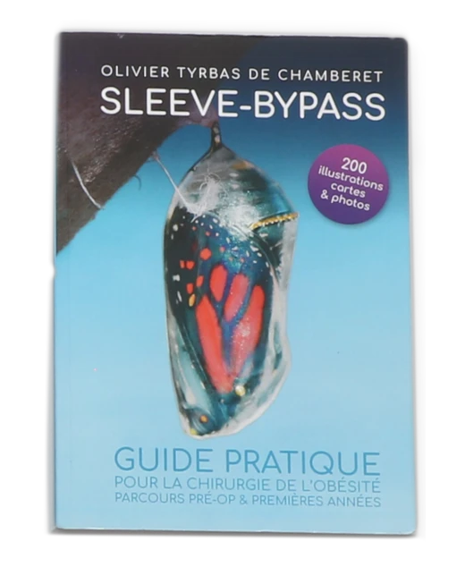
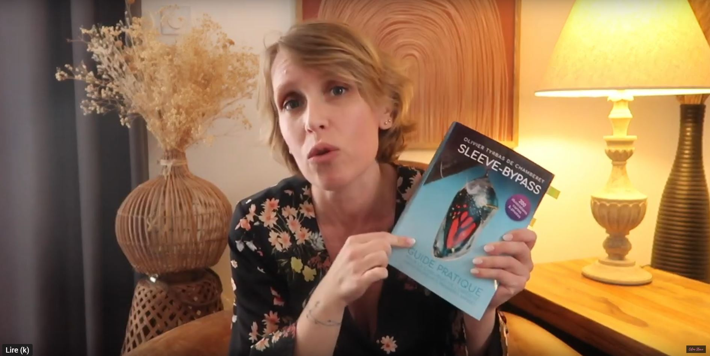

Des professionnels de santé ont écrit des livres passionnants à propos du bariatrique. Certains patients témoignent de leurs expériences. Ce livre vous propose une synthèse unique. Vous y trouverez tout ce que vous avez besoin de savoir sur la chirurgie de l’obésité (la chirurgie bariatrique).
Considérez-le comme un guide de voyage !
Le contenu, en bref
Abondamment illustré, sous forme d’articles indépendants courts, il répond aux questions de chaque étape du parcours. Exemples : l’inquiétude fréquente du « bon volume » est illustrée par 5 assiettes-types à 2 mois post-op. Les cicatrices sont décrites sur quatre pages et 15 photos, et on visualise l’évolution d’un patient témoin pendant un an.
Vos questions, les réponses
Ce livre répond aux questions que des centaines de patients m’ont posées en plus de cinq ans, avec les solutions trouvées collectivement, patients et professionnels. L’implication de la famille fait aussi l’objet d’articles spécifiques. Il propose par exemple des supports adaptés à l’âge de l’enfant pour lui expliquer l’opération.
Comment est-il composé ?
Conçu comme un guide de voyage, il compte 4 grands chapitres reliés entre eux pour une navigation facile.
- Expliquer la mécanique de l’obésité afin de mieux se soigner.
- Se préparer à l’intervention.
- L’opération et la phase critique des premières semaines.
- S’adapter à sa nouvelle vie.
De nombreuses check-lists rassemblent les recommandations des opérés ; certaines sont téléchargeables ci-dessous.
Ressources en accès libre téléchargeables
Est-ce fait pour vous ?
Aux personnes en situation d’obésité, pour les aider à comprendre leur rapport au poids. Il est pensé autour de la chirurgie bariatrique, et apporte aussi des réponses à ceux qui privilégient les options pharmacologiques.
Ce livre explique l’importance du suivi et veut casser les mythes : ce n’est pas une solution de facilité. Volontairement centré sur les cas courants plutôt que les scénarios rares, il s’appuie sur les recommandations des équipes pluridisciplinaires et propose des moyens concrets de les mettre en œuvre.
Commander : Où le trouver ?
Ce livre est disponible en plusieurs formats en fonction de votre besoin :
Touchez ou survolez une couverture : son offre se détache, les autres s’estompent.
-

Version 2025Format poche couleurs35,43 € hors frais de port -

Version 2025Version PDF couleurs11,50 € -

Version 2025Reliure spirale — couleur27,70 € hors frais de port -

Version 2025Reliure spirale — noir & blanc19,35 € hors frais de port -

Version 2023Format poche couleurs sur Amazon.fr41,09 € port inclus avec Prime - Version 2025Format poche couleurs (Tarif auteur)32,50 € frais de port France inclus
Quoi de neuf dans l’édition 2025 ?
Un guide repensé pour les patients bariatriques : de nouveaux articles, des conseils concrets, des solutions validées par les professionnels de santé. Un compagnon pratique, enrichi et motivant.
Le nouveau titre reflète mieux l’esprit du livre avec la couverture originale d’une jeune artiste dont j’aime beaucoup l’univers. Grâce à de nombreuses discussions avec des professionnels de santé bienveillants, j’ai inclus des améliorations comme des chapitres sur la frustration ou les compléments alimentaires, un arbre d’actions pour mieux gérer la reprise de poids, et enfin des réponses éprouvées contre la perte des cheveux qui angoisse tellement de patientes (accessibles en accès libre) !
Cette nouvelle édition intègre aussi les recommandations de la Haute Autorité de santé française. Les multiples échanges avec les opérés m’ont permis d’ajouter plusieurs chapitres (les notions d’objectif, de contrôle, ou la stigmatisation), pour mieux comprendre l’obésité, préparer son parcours et lutter plus efficacement contre la maladie ! J’ai enfin ajouté des sujets que vous m’avez proposés (comme le don du sang ou les emprunts). Presque 80 nouveaux articles et plus de 30% du contenu nouveau ou modifié. Merci à tous ! Ce sont les réponses que nous avons élaborées ensemble depuis 5 ans.
Cette nouvelle édition aurait dû dépasser 500 pages, avec un prix de vente trop élevé. J’ai donc revu la maquette et optimisé le contenu pour rester dans un format de moins de 420 pages. Ce livre est maintenant disponible en 4 formats (dont PDF) afin que chacun puisse trouver celui qui lui convient.
Avis : Qu’est-ce qu’ils en disent ?

Les obésités : Partage de réalités
Vous trouvez ici les liens vers les deux enquêtes déjà publiées et leurs résultats. Elles ont pour but de mieux comprendre la maladie obésité. Les résultats sont mis à jour régulièrement. Dernière mise à jour : 18 mars 2026
Carte des restaurants
Nouveau : vous disposez maintenant d’une carte des restaurants qui sont « baria-compatibles ». Vous pouvez l’installer sur votre téléphone.

Bonus : Carte des associations de patients
Cette cartographie repose sur des critères objectifs, notamment l’enregistrement des structures au Journal Officiel.
La carte est établie avec l’accord des associations référencées, qui partagent toutes une approche médicale commune de l’obésité. Cette carte est mise à jour et enrichie en continu depuis 2024. Elle s’enrichit progressivement.
Elle constitue déjà une ressource identifiée dans le guide de la HAS « Chirurgie de l’obésité – Ce qu’il faut savoir avant de vous décider » (p. 13) et sur le site des centres spécialisés de l’obésité.
Les principaux objectifs de cette carte sont :
- Permettre aux personnes en situation d’obésité d’identifier facilement une association locale d’information, de soutien et d’entraide (rupture d’isolement / partage d’expériences / soutien émotionnel et motivation à s’engager dans un parcours de soins).
- Favoriser la mise en lien et la coopération entre associations de patients et centres de soins.
- Offrir un outil aux CSO pour relayer les messages clés (notamment l’importance d’un parcours personnalisé pluridisciplinaire) en raison de la chronicité de la maladie, et contribuer à limiter les perdus de vue.
Cette carte se veut la plus exhaustive possible. Elle est indépendante de tout enjeu institutionnel ou politique.
Il existe deux associations nationales : CNAO.fr (Collectif National des Associations d’Obèses) et la Ligue nationale Contre l’Obésité liguecontrelobesite.org qui accueillent l’adhésion d’associations de patients locales, et qui proposent des informations et des ressources fiables.
Ouvrir la carte des associations
Droit de modification : toutes les associations peuvent demander une modification ou le retrait de cette carte.